MIT — Zonal 7 | Control Vial y Limpieza de Alcantarillas
📋 Cronograma, Rutas y Seguimiento
🗺️ GeoPortal y Mapa QGIS
⚙️ Parámetros Generales de Planificación y Proyecto
💰
Inversión
$36,483.40
⏳
Plazo
3.5 Meses
⏱️
Horas Globales
1,273 h

🚜
Retroexcavadora
793 h

🏗️
Excavadora
177 h
🚛
Volquetes
303 h
👷♂️
Microempresas
En Campo
Frente 1
Retroexcavadora
Volquete
👷♂️
Microempresa
Frente 2
Retroexcavadora
Volquete
👷♂️
Microempresa
Frente 3
Excavadora
Volquete
👷♂️
Microempresa
📋 Asignación Oficial de Microempresas, Rutas y Rendimiento Diario
Monitorización en Tiempo Real
Los datos se leen automáticamente del archivo matriz alojado en el servidor web.
Conectado a Servidor
Microempresa
Tramo - Ruta
Alc. Obstruidas
Alc. Limpias
Avance Alcantarillas
Rendimiento Abscisas (Km)
Avance por Abscisas
Sincronizando datos con el servidor...
📊 Resumen de Alcantarillas
Obstruidas Críticamente
186
🚧
●
Inmediata:
0
●
Alta:
0
●
Alta / Inmediata:
0
●
Media:
0
●
Prioritaria:
0
📍
POR TRAMO ESTATAL
Haz clic en una barra para enfocar el tramo
🌍 Restaurar Vista Zonal 7
🗺️ Capas del Mapa QGIS
—
Red Vial Estatal
●
Inmediata
●
Alta
●
Alta / Inm.
●
Media
●
Prioritaria
●
Alcantarillas de la RVE